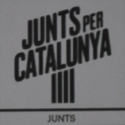

Imatge:
Candidats
+
-
Suplents
+
-
IMPRIMIR
ELECCIONES A CORTES GENERALES 2023
ELECCIONS A CORTS GENERALS 2023
DIPUTADOS/AS
DIPUTATS/ADES
BARCELONA
JUNTS PER CATALUNYA - JUNTS
(JxCAT-JUNTS)

JORDI TURULL I NEGRE
CONCEPCIÓ CAÑADELL SALVIA
ROSA MARIA BURRELL OBIOLS
RICARD PÉREZ LLORDES
Suplentes/Suplents
RAUL PALACIOS BOVER
MERCE VALLS I QUEROL
RAFEL SAFONT ALIAGA